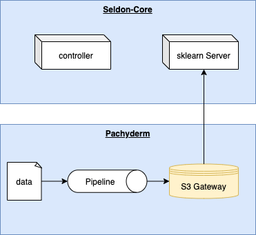

This page was generated from examples/pachyderm-simple/index.ipynb.
Pachyderm-Seldon Integration: Version Controlled Models¶
Pachyderm is a data science platform that combines Data Lineage with End-to-End Pipelines. Seldon-Core is an open-source platform for rapidly deploying machine learning models.
This notebook will show you how to perform data-driven model training using Pachyderm and deploy that model using Seldon-Core. This represents the simplest integration between Pachyderm and Seldon.
Highlights¶
The highlight in this example is the use of Pachyderm’s S3 gateway, where version controlled pachyderm repositories are exposed via an S3-like API. This means that Seldon-Core’s pre-packaged model servers, which typically read from blob storage, can read directly from Pachyderm.
This implements the machine learning best practice of provenance. You can trace the model artifact’s lineage right back to the version of the data that it was trained on, without making any changes to your usual way of working.

Prerequisites¶
A kubernetes cluster with kubectl configured
curlPachyderm’s
pachctlbinary installed following the official documentation
Pachyderm is controlled and deployed via the pachctl. This document assumes that you have version 1.11.8 installed, although it should work with any 1.x.x version.
[1]:
!pachctl version --client-only
!kubectl get po -A
1.11.9
NAMESPACE NAME READY STATUS RESTARTS AGE
istio-system istio-ingressgateway-56c9c8cd47-v5tjv 1/1 Running 0 116s
istio-system istiod-759c7859d5-g5nnn 1/1 Running 0 2m19s
kube-system coredns-6955765f44-4rfs6 1/1 Running 0 3m39s
kube-system coredns-6955765f44-gsggt 1/1 Running 0 3m39s
kube-system etcd-seldon-control-plane 1/1 Running 0 3m32s
kube-system kindnet-g8ptw 1/1 Running 0 3m39s
kube-system kube-apiserver-seldon-control-plane 1/1 Running 0 3m32s
kube-system kube-controller-manager-seldon-control-plane 1/1 Running 0 3m32s
kube-system kube-proxy-7lgg5 1/1 Running 0 3m39s
kube-system kube-scheduler-seldon-control-plane 1/1 Running 0 3m32s
local-path-storage local-path-provisioner-58f6947c7-pfvth 1/1 Running 0 3m39s
seldon-system seldon-controller-manager-b9fd77c6f-pmdc2 1/1 Running 0 88s
1. Installing Pachyderm¶
Use pachctl to deploy Pachyderm to your cluster. In the command below I disable the pachyderm dashboard because it is not used in this example and I intentionally disable sharing of the docker socket to reduce the chance that rogue containers can access my system.
[2]:
!kubectl create ns pachyderm
!pachctl deploy local --no-expose-docker-socket --no-dashboard --namespace pachyderm
namespace/pachyderm created
serviceaccount/pachyderm created
serviceaccount/pachyderm-worker created
clusterrole.rbac.authorization.k8s.io/pachyderm created
clusterrolebinding.rbac.authorization.k8s.io/pachyderm created
role.rbac.authorization.k8s.io/pachyderm-worker created
rolebinding.rbac.authorization.k8s.io/pachyderm-worker created
deployment.apps/etcd created
service/etcd created
service/pachd created
service/pachd-peer created
deployment.apps/pachd created
secret/pachyderm-storage-secret created
Pachyderm is launching. Check its status with "kubectl get all"
[3]:
!kubectl rollout status deployment -n pachyderm pachd
Waiting for deployment "pachd" rollout to finish: 0 of 1 updated replicas are available...
deployment "pachd" successfully rolled out
2. Add the Training Data¶
Note: If you are using a non-standard Pachyderm namespace, you will need to run
pachctl port-forwardin a separate terminal
Before we train a model, I will first create a new Pachyderm repository to version control the data, then commit the training data to that repository. You should be able to see iris.csv in the master branch of the repository training.
[4]:
!pachctl create repo training
[5]:
!cd data && pachctl put file training@master -f iris.csv
iris.csv: 4.44 KiB / 4.44 KiB [===============================] 100.00% ? p/s 0s
[6]:
!pachctl list repo
NAME CREATED SIZE (MASTER) DESCRIPTION
training About a minute ago 4.443KiB
[7]:
!pachctl list file training@master
NAME TYPE SIZE
/iris.csv file 4.443KiB
3. Train the Model Using a Pachyderm Pipeline¶
Pachyderm Pipelines are the computational component of the Pachyderm platform. They are responsible for reading data from a specified source, such as a Pachyderm repo, transforming it according to the pipeline configuration, and writing the result to an output repo. Pachyderm pipelines can be easily chained together to create a directed acyclic graph (DAG).
I define a simple pipeline that is inspired by a similar Pachyderm example. It accepts training data, trains a logistic classifier, and returns a pickled model in joblib format.
This uses a container built from the iris-train-python-svm directory to perform the training, but you could use your own. The input is defined to be the training Pachyderm repository and the output will be stored in a repository with the same name as the pipeline (model). Remember to push the container to somewhere that the cluster can acccess. For example, you can use the
make kind_load target in the Makefile to push the container to a kind cluster.
[8]:
%%writefile train.json
{
"pipeline": {
"name": "model"
},
"description": "A pipeline that trains a SVM model based on the data in the `data` directory by using a Python script.",
"transform": {
"image": "seldonio/pachyderm-iris-trainer:1.0.0",
"cmd": [
"python3",
"/code/pytrain.py",
"/pfs/training/",
"/pfs/out/"
]
},
"parallelism_spec": {
"constant": "1"
},
"input": {
"pfs": {
"repo": "training",
"glob": "/"
}
}
}
Overwriting train.json
[9]:
!pachctl create pipeline -f train.json
[10]:
!pachctl list pipeline
NAME VERSION INPUT CREATED STATE / LAST JOB DESCRIPTION
model 1 training:/ 1 second ago starting / starting A pipeline that trains a SVM model based on the data in the `data` directory by using a Python script.
4. Verify Pipeline Success¶
It may take a while for the job to start the first time, as Kubernetes pulls the container. But eventually you should see that the job completes and a new file is committed to the master branch of the model repository.
[12]:
!pachctl list job
ID PIPELINE STARTED DURATION RESTART PROGRESS DL UL STATE
4315d70acf4d4497ba9d3581a731c8d5 model About a minute ago 1 second 0 1 + 0 / 1 4.443KiB 1.193KiB success
[13]:
!pachctl list file model@master
NAME TYPE SIZE
/model.joblib file 1.193KiB
5. Deploy Seldon-Core Powered Sklearn Server¶
Now that you have a model artefact, you can use Pachyderm’s S3 gateway feature to directly load the version controlled model into a Seldon-Core deployment.
The key is to create a container secret that points to the pachyderm cluster on the right port. If you have installed Pachyderm by following this tutorial, then it will have installed with no credentials. In this case the corresponding access key and secret are not used (but must be set). The endpoint URL is pointing to the in-cluster FQDN of the pachyderm service on port 600.
Next you can deploy your sklearn-based Seldon Deployment in the usual mannor, using the following format for the S3 bucket: s3://${branch}.${repository}/${directory}. Since our model is written to the root of the directory, the final s3 modelUri is s3://master.model.
[16]:
%%writefile secret.yaml
apiVersion: v1
kind: Secret
metadata:
name: seldon-init-container-secret
type: Opaque
stringData:
AWS_ACCESS_KEY_ID: noauth
AWS_SECRET_ACCESS_KEY: noauth
AWS_ENDPOINT_URL: http://pachd.pachyderm.svc.cluster.local:600
USE_SSL: "false"
Overwriting secret.yaml
[17]:
!kubectl -n seldon apply -f secret.yaml
secret/seldon-init-container-secret configured
[20]:
%%writefile deploy.yaml
apiVersion: machinelearning.seldon.io/v1
kind: SeldonDeployment
metadata:
name: pachyderm-sklearn
spec:
name: iris
predictors:
- componentSpecs:
graph:
children: []
implementation: SKLEARN_SERVER
modelUri: s3://master.model
envSecretRefName: seldon-init-container-secret
name: classifier
name: default
replicas: 1
Overwriting deploy.yaml
[21]:
!kubectl -n seldon apply -f deploy.yaml
seldondeployment.machinelearning.seldon.io/pachyderm-sklearn configured
[22]:
!kubectl -n seldon rollout status deploy/$(kubectl get deploy -l seldon-deployment-id=pachyderm-sklearn -o jsonpath='{.items[0].metadata.name}')
Waiting for deployment "pachyderm-sklearn-default-0-classifier" rollout to finish: 1 old replicas are pending termination...
Waiting for deployment "pachyderm-sklearn-default-0-classifier" rollout to finish: 1 old replicas are pending termination...
Waiting for deployment "pachyderm-sklearn-default-0-classifier" rollout to finish: 1 old replicas are pending termination...
deployment "pachyderm-sklearn-default-0-classifier" successfully rolled out
6. Test the Deployment¶
Now that the deployment has completed, you can call the model predict endpoint via the port-forwarded ingress FDQN and the seldon-core API. The input matches the convension expected by the mdoel (set by the training data) and results in predicted class probabilities.
[28]:
%%bash
curl -s -X POST -H 'Content-Type: application/json' \
-d '{"data":{"ndarray":[[5.964, 4.006, 2.081, 1.031]]}}' \
http://localhost:8003/seldon/seldon/pachyderm-sklearn/api/v1.0/predictions | jq .
{
"data": {
"names": [
"t:0",
"t:1",
"t:2"
],
"ndarray": [
[
0.9550249833404882,
0.04491709964435876,
5.791701515296898e-05
]
]
},
"meta": {
"requestPath": {
"classifier": "seldonio/sklearnserver:1.6.0-dev"
}
}
}
7. Bonus: Rebuilding the Model¶
The beauty of having models version controlled is that when you change the data, you can automatically retrain the model.
Below I’m overwriting the old training data with a slightly smaller version of the same. When I do this, the pipeline notices and automatically runs. That means that the model artifact is regenerated and place back in it’s repo.
At the end, all we need to do is restart the pod, to get Seldon-Core to reload model from it’s S3 endpoint. You’ll see in the final call of the predict endpoint that the result has changed, even though we’re passing in the same input data. This is because the decision boundaries have changed slightly due to the different training data distribution.
In another example I will show you how to automate this.
[29]:
!cd data && pachctl put file training@master:/iris.csv -f iris_2.csv
iris_2.csv: 1.29 KiB / 1.29 KiB [=============================] 100.00% ? p/s 0s
[30]:
!pachctl list file training@master
NAME TYPE SIZE
/iris.csv file 5.729KiB
[31]:
!pachctl list job
ID PIPELINE STARTED DURATION RESTART PROGRESS DL UL STATE
54168db975c2459cb5e537db4def3688 model 3 seconds ago Less than a second 0 1 + 0 / 1 5.729KiB 1.193KiB success
4315d70acf4d4497ba9d3581a731c8d5 model 5 minutes ago 1 second 0 1 + 0 / 1 4.443KiB 1.193KiB success
[32]:
!kubectl -n seldon delete -f deploy.yaml
!kubectl -n seldon apply -f deploy.yaml
seldondeployment.machinelearning.seldon.io "pachyderm-sklearn" deleted
seldondeployment.machinelearning.seldon.io/pachyderm-sklearn created
[33]:
!kubectl -n seldon rollout status deploy/$(kubectl get deploy -l seldon-deployment-id=pachyderm-sklearn -o jsonpath='{.items[0].metadata.name}')
Waiting for deployment "pachyderm-sklearn-default-0-classifier" rollout to finish: 0 of 1 updated replicas are available...
deployment "pachyderm-sklearn-default-0-classifier" successfully rolled out
[34]:
%%bash
curl -s -X POST -H 'Content-Type: application/json' \
-d '{"data":{"ndarray":[[5.964, 4.006, 2.081, 1.031]]}}' \
http://localhost:8003/seldon/seldon/pachyderm-sklearn/api/v1.0/predictions | jq .
{
"data": {
"names": [
"t:0",
"t:1",
"t:2"
],
"ndarray": [
[
0.9622688698661227,
0.03771194327740441,
1.9186856472893013e-05
]
]
},
"meta": {
"requestPath": {
"classifier": "seldonio/sklearnserver:1.6.0-dev"
}
}
}
Cleanup¶
[35]:
!kubectl -n seldon delete -f deploy.yaml
!kubectl delete ns pachyderm
seldondeployment.machinelearning.seldon.io "pachyderm-sklearn" deleted
namespace "pachyderm" deleted